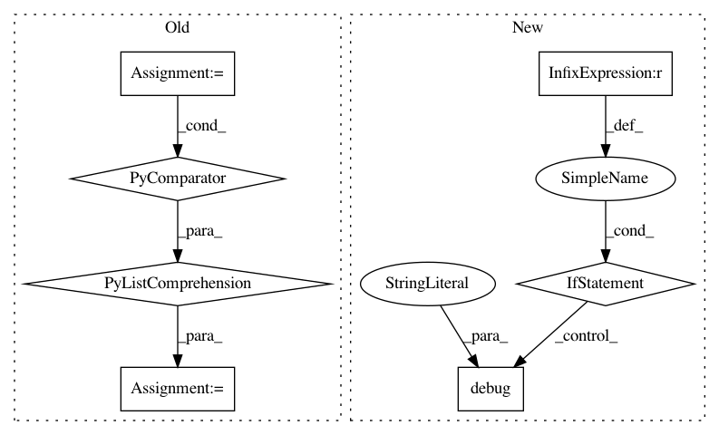

b73fc0c21ea55c7d3357fbf633944e1e67db8bdf,theanolm/scoring/latticedecoder.py,LatticeDecoder,decode,#LatticeDecoder#Any#,199
Before Change
node_tokens = tokens[node.id]
assert node_tokens
if node.id == lattice.final_node.id:
new_tokens = [self.Token.copy(token) for token in node_tokens]
self.append_word(new_tokens, self._eos_id, lm_scale, wi_penalty)
return sorted(new_tokens,
key=lambda token: token.total_logprob,
reverse=True)
After Change
tokens[link.end_node.id][100:] = []
nodes_processed += 1
if nodes_processed % math.ceil(len(sorted_nodes) / 20) == 0:
logging.debug("[%d] (%.2f %%) -- tokens = %d",
nodes_processed,
nodes_processed / len(sorted_nodes) * 100,
len(node_tokens))
raise InputError("Could not reach the final node of word lattice.")
def _propagate(self, tokens, link, lm_scale, wi_penalty):
Propagates tokens to given link or to end of sentence.
In pattern: SUPERPATTERN
Frequency: 3
Non-data size: 7
Instances
Project Name: senarvi/theanolm
Commit Name: b73fc0c21ea55c7d3357fbf633944e1e67db8bdf
Time: 2016-07-31
Author: seppo.git@marjaniemi.com
File Name: theanolm/scoring/latticedecoder.py
Class Name: LatticeDecoder
Method Name: decode
Project Name: deepfakes/faceswap
Commit Name: bcf38b02cc7209d1baccd1302b5224f5faf2f00a
Time: 2021-01-31
Author: 36920800+torzdf@users.noreply.github.com
File Name: plugins/train/model/_base.py
Class Name: _Inference
Method Name: _make_inference_model
Project Name: RaRe-Technologies/gensim
Commit Name: 4c0737ab80aa30b92ed9f9d7fecd399a126a17d2
Time: 2017-09-18
Author: macks22@users.noreply.github.com
File Name: gensim/models/coherencemodel.py
Class Name: CoherenceModel
Method Name: topics